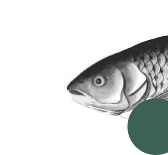
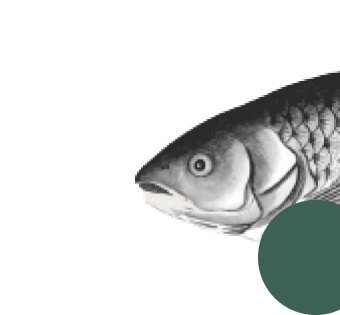

Lotus tower fish and plant
reservation project
Discover Lotus Tower, Colombo's iconic architectural masterpiece. With its stunning lotus-inspired design and multifunctional facilities, it offers breathtaking views, telecommunications services, and unforgettable experiences. Welcome to a world of elegance and innovation at Lotus Tower.
Dive into fish and plants sections.